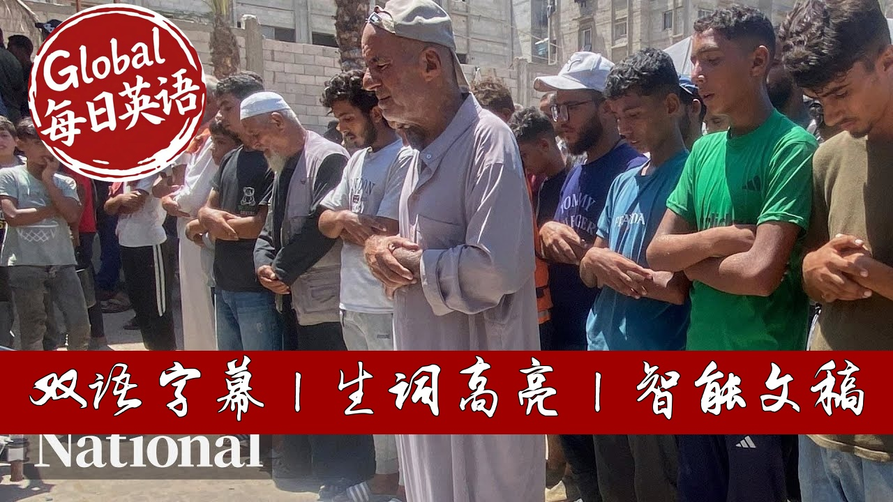

【加拿大 Global News 20250826 加沙医院遭以军双重打击｜加拿大总理欧洲行聚焦防务合作｜英国抗议法引发讽刺浪潮｜加拿大女运动员夏季屡创佳绩】
Summary: Israel launched a double strike on a hospital in southern Gaza, killing at least 20 people including healthcare workers and journalists. The attack, described as a potential war crime, drew worldwide condemnation. Canada expressed horror at the incident, emphasizing that targeting journalists is unacceptable. Meanwhile, Prime Minister Mark Carney visited Europe to discuss defense cooperation and trade diversification. In the UK, a man mocked the ban on Palestine Action by creating a satirical protest group. Canadian golfer Brooke Henderson won her 14th professional title, highlighting a successful summer for Canadian women in sports.
摘要： 以色列军队对加沙南部医院发动双重打击，造成至少20人死亡，其中包括医护人员和记者。这次被描述为潜在战争罪的袭击引发全球谴责。加拿大表示对事件感到震惊，强调针对记者的行为不可接受。与此同时，总理马克·卡尼访问欧洲讨论防务合作与贸易多元化。在英国，一名男子通过创建讽刺抗议组织来嘲弄对巴勒斯坦行动组织的禁令。加拿大高尔夫球手布鲁克·亨德森赢得第14个职业冠军，凸显了加拿大女性运动员成功的夏季。

⏱️ Estimated Reading Time: 33 min.
📚 四级生词 📚 六级生词 📚 雅思生词 📚 托福生词 📚 专八生词 📚 SAT生词 📚 考研生词 📚 GRE生词
On this Monday night, Israel's deadly double strike on a hospital in Gaza.
The journalist killed why it's suspected to be a war crime and the worldwide condemnation.
The Prime Minister's mission to build European relationships, how defense is high on his agenda.
I think what it indicates is that the landscape has changed.
The clever and subversive rebrand of a protest movement banned in the UK.
Classical action, the group.
We are a peaceful organization.
How one man is mocking a British law.
Plus, she came back swinging.
Well, it feels super surreal still.
Canadian golf champion Brook Anderson's new victory and how Canada is leading away in women's sports.
Global national with Donna Friesen.
Good evening and thanks for joining us.
The Israeli military killed at least another 20 people in Gaza today hitting a hospital in southern Gaza twice, a hospital that was already only partially functioning.
Among the dead, healthcare workers and journalists.
Israel's Prime Minister calls it a tragic mishap.
These are the journalists killed who some al-Masri worked for Reuters, Muhammad Salama for Al-Jazeera, Mariam Abu Daka freelance for the associated press and others.
Moas, Abu Taha and Ahmed Abu Aziz were both also freelancers.
Without local journalists like them, the world would not see what is happening in Gaza, because Israel prevents international journalists from covering the conflict.
Nearly 200 journalists have been killed in Gaza since October of 2023.
Canada's foreign affairs ministry told Reuters today that it is horrified by the Israeli military strike on Nasr Hospital and that such attacks are unacceptable.
Targeting journalists is considered a war crime.
Mike Armstrong explains what happened and why Israel's tactics are being widely condemned.
This is the aftermath of the first strike.
No one knew another was coming.
Nasr is the main hospital in southern Gaza.
It's also an elevated vantage point often used by journalists for live reporting.
While among those killed in the initial strike was Reuters' cameraman, Husam Al-Masri.
He had been streaming a live feed from this equipment when he was hit.
It was when more journalists arrived and rescue crews were moving the body of a victim that the same spot was hit again.
Now, striking the same place twice is in some conflicts a strategy.
The first hit brings people to the scene, second then takes out more.
It was what's called a double tap strike.
That is widely held by international humanitarian law experts to be a war crime.
The Israeli military is admitting it hit Nasr Hospital and says there will be an internal inquiry into whether a mistake was made.
The IDF does not intentionally target civilians.
The Israeli Prime Minister posted on social media that the country regrets what he calls a tragic mishap, saying Israel values the work of journalists, medical staff, and civilians.
But the attack is drawing heavy criticism from capitals around the world and the United Nations.
The Secretary-General recalls that civilians, including medical personnel and journalists, must be respected and protected at all times.
Reuters cameraman Hussam Al-Mazri shot what would be his last story this past weekend.
It was about a family of four being buried.
Earlier this month, after another journalist was killed, Al-Mazri shot a story about how he and his colleagues worked and survived, not on the front lines of the conflict with the front line in every direction.
Journalists have been targeted at times, Israel says, because of links to Hamas.
Close to 200 journalists have been killed in this conflict and international groups don't expect much from an IDF investigation into Monday's deaths.
Israel very rarely carries out transparent investigations and in no cases of journalists killings thus far has anyone ever been held accountable.
Now, because Israel doesn't allow foreign journalists into Gaza, almost every journalist killed has been local, not someone who chose to pack a bag and a helmet to cover a conflict, but someone who had conflict come to them.
My arms from Global News, Montreal.
Prime Minister Mark Carney is in Europe talking defense.
After his surprise visit to Ukraine's capital on Sunday, he met his Polish counterpart today in Warsaw.
Both visits have a common thread, what role Canada can play in defense and security of Eastern Europe against Russia's aggression.
David Aiken is traveling with the Prime Minister.
On the second of his four days in Europe, Prime Minister Mark Carney meets Canadian troops stationed in Poland.
In all four European capitals, Carney is to visit, European defense and security has been and will be a constant theme.
And it was Monday in Poland's capital as he met his Polish counterpart, Donald Tusk.
And is absolutely essential to the defense of Ukraine.
And it's no coincidence that Carney's defense minister, David McGinty, is the only cabinet minister that is accompanying Carney throughout these four days.
I think Canadians know that the landscape has changed, that the geopolitics are changing, but the threat landscape has changed.
And as a result, we continue to pursue defense, security and intelligence discussions right around the world.
Carney campaigned on diversifying Canada's security relationships, along with Canada's trading relationships.
And in this part of Europe, he thinks he can do both.
Poland's spending on defense has nearly doubled since Russia invaded Ukraine in 2022.
Carney has vowed to quadruple Canada's defense spending by 2030.
And he says Poland is an inspiration.
We learn much from the Prime Minister, from his government, including the importance of pulling our full weight in NATO.
And it will take us a few years to reach Polish levels of commitment.
But it's possible.
Prime Minister Tusk said Poland is keen to buy more airplane engines from Canada and would like to know more about Canada's small, modular reactor technology.
And that means more chances for Canadians to diversify trading patterns.
The whole objective of these four days in Europe really is all about defense and trade.
And Carney is fond of using this phrase, and it's a real central banker phrase.
He says he wants to catalyze investment from Europe into Canada and increase Canadian exports abroad.
Donna.
David Aiken in Berlin, thank you.
A number of homes in Nova Scotia have been destroyed by a wildfire that is still burning out of control.
The Long Lake Fire is burning in the Annapolis Valley and is consumed more than 77 square kilometers.
The province says it's not certain yet exactly how many homes have been destroyed or damaged.
Premier Tim Houston says the province is trying to ease the financial burden on families forced out by the fire.
So for every household that has been evacuated for four to seven days, the province will provide each adult with $500 and each minor with $200 to help support you through those through your urgent needs right now.
Families in 330 homes in the Annapolis Valley have had to flee because of that fire.
The family of a Norwegian man plans to come to Canada later this week after his body was discovered in northern Manitoba yesterday.
RCMP found 29-year-old Stefan Schoelvik on the banks of the Hayes River near where his belongings were found days earlier.
Police believe he tried crossing the river and may have been swept away by the current.
He was on a cross-country tour of Canadian wilderness and was first reported missing on August 15 after failing to arrive in York factory.
Contract negotiations between Canada Post and the Union representing its postal workers are being temporarily paused.
Canada Post cancelled a meeting that was planned today.
CUP W. TEL'S Global News, the Crown Corporation needs more time to review the union's offer.
It's not known when talks might resume.
In a statement last week, Canada Post said it was committed to reaching an agreement but requested more information to support the process.
Smoking rates are at an historic low in this country.
According to stats, Canada only one in ten Canadians say they now smoke cigarettes.
And those who are still trying to quit are now being advised to steer clear of vaping as an alternative.
Skyler Peters explains why.
According to statistics, Canada, a little more than ten percent of Canadians say they smoke cigarettes.
While at the same time, nearly six percent of Canadians over the age of 15 say they use vaping products.
Once viewed as a contemporary way to quit smoking, it's now a method experts are recommending against.
We also didn't want to normalize its use.
We know it's quite prominent and we think there's better things that you can try before to quit smoking.
In the most recent Canadian tobacco and nicotine survey, 31 percent of smokers made an attempt to quit within the past year.
Of those people, more than half of them tried without any type of assistance, nearly 40 percent tried smoking less, 28 percent tried switching to e-cigarettes, and more than a quarter tried nicotine replacement products.
It's used more often than patches, gum, or lozenges.
But researchers say vaping is not as effective.
Nicotine replacement therapies are health Canada approved and they've been designed specifically for the purpose of getting people to stop smoking.
You don't have that precision in smoking cessation with other products.
The task forces recommendations include seeking advice from a care provider, getting counseling, and replacement therapies such as nicotine gum, lozenges, or patches.
It recommends against e-cigarette use, except for smokers who haven't had success with other options.
First, aren't willing to try those options or express a strong preference to use e-cigarettes.
Experts say vaping is no longer marketed as a tool, pointing to flavors like bubble gum, fruit, or candy.
They tend to be very favored by the youth, and then that creates an entire population that is now nicotine dependent.
No matter the method, Dr. Eddie Lang says the less nicotine dependency there is in Canada, the better off the country will be.
We know it's hard to quit.
It probably takes more than two or three times, but the health benefits are extraordinary.
Skyler Peters, Global News, Calgary.
Detained again, coming up, why a man wrongfully deported from the U.S. is back in the custody of immigration officials.
Members of the U.S. National Guard, patrolling Washington, D.C., have now started caring firearms after a directive from the U.S. Defense Secretary.
President Donald Trump called in the National Guard to the American Capitol, claiming there is a surge in violent crime there.
The statistics, though, do not back that up.
Data shows crime at a 30-year low in Washington, D.C.
Trump has now threatening similar deployments of troops to Chicago and Baltimore.
And the Trump administration seems intent on making an example of a man they mistakenly deported to an important notorious prison in El Salvador this spring.
Kilmar, a braggogarcio was brought back to the U.S. but has now been detained again and charged with human trafficking.
The latest plan is to deport him to Uganda, though as Nithu Garche explains he is trying hard to fight it.
A brief embrace before they were separated again.
Kilmar, a braggogarcio, flanked by his wife and supporters entered ICE offices in Baltimore Monday morning and didn't walk back out.
His lawyer says they were told the check-in was just an interview.
Instead, a braggogarcio was taken into custody again, with ICE now trying to deport him to Uganda.
A country he has no ties to.
Enough is enough playing political games with his family and torturing this man.
Just three days ago, a braggogarcio was back with his family in Maryland.
A judge had ordered the 30-year-olds release from jail ruling that he didn't need to be locked up while awaiting trial on human smuggling charges.
Prosecutors have not pursued criminal charges for domestic violence or any other kind of violent crime, not now, not in the past.
Still, U.S. President Donald Trump weighed in today calling a braggogarcio an animal and repeating claims of domestic violence which a braggogarcio denies.
He beat the hell out of his wife.
His wife is afraid to even talk about it.
She's been mauled by this animal.
The U.S. Secretary of Homeland Security, Kristi Nome, set on social media, immigration authorities are processing him for deportation.
The attorney general said this.
We're going to keep America safe from all of these foreign terrorist organizations, including a braggogarcio.
There's extraordinary statements that they're really trying to lean into, really shows what a political vulnerability.
Mr. Abreo's case has become for the administration.
Several years ago, a U.S. judge ruled a braggogarcio would likely face persecution if he was deported to El Salvador, an order that was ignored by the Trump administration.
The Justice Department later admitted it was a mistake.
They're trying to do what they can to distract from the case and really vilify Mr. Abrego.
A federal judge in Maryland has blocked any deportation until at least 4 p.m. Wednesday.
A legal expert told me the Trump administration's handling of the case, including inflammatory public statements, could actually strengthen a braggogarcio's claim to stay in the U.S.
As the judge now also weighs whether their plan to send him to Uganda could violate his rights.
Donna?
All right, Neethu Garche in Washington.
Thank you.
Ahead the t-shirt that's part of a movement mocking a controversial law in the U.K. banning the Palestine Action Group.
Back in July, the U.K. government banned a protest group called Palestine Action, declaring them a terrorist organization.
Hundreds of people have been arrested and it sparked a lot of debate in the U.K. over what constitutes terrorism and how free speech should be protected.
As Redmond Shannon reports, one man is now in the spotlight for taking aim at the law with a mix of satire and spelling.
When pro-Palestine demonstrators gathered in London this month, police arrested more than 500 people for holding signs in support of the group, Palestine Action.
Half were aged 60 and above.
When members of Palestine Action allegedly spray-painted British military planes in June, the British government classified the group as a terrorist organization.
Now just showing support for it can lead to a terror conviction.
The United Nations Human Rights Chief said the move conflates protected expression with acts of terrorism.
Among those arrested in London is Miles Pickering, but take a closer look at his t-shirt.
Plasticine Action, the group.
We are a peaceful organization.
Yes, plasticine action.
Pickering says police quickly acknowledged their mistake.
And I said, the good news is on dear resting you.
He said, the bad news is it's going to be horribly embarrassing for me.
And he said, you're free to go.
Pickering claims his new group with a strikingly similar logo to Palestine Action rallies against the use of AI in animation.
He is now selling the shirts online, likely to others with a subversive streak.
Profits go to the group medical aid for Palestinians.
Pushed on his motives, Pickering only says.
Well, we love a bit of satire, is often can achieve quite a lot, shall we say.
It is something that is in our history, as is protest.
Ma'am, where are they taking you?
Pickering says he's not sure what will happen if some of the 4000 shirts he sold appear at the next major protest.
Redmond Channel Global News, Brighton, England.
Drought, broken, next, how Canada's Brook Henderson claimed victory again on home soil.
After a powerhouse performance at the Canadian Open in Montreal nearly three weeks ago, rising Canadian tennis star Victoria Emboco made her first appearance at the US Open.
Didn't go quite as well.
18-year-old Emboco was quickly eliminated from the tournament.
She lost a two-ton grand slam champion, Barbora, Craychicova in two sets.
Emboco is recovering from a wrist injury.
The greatest golfer in Canada's history is back on top of the podium.
Brooke Henderson won the Canadian Women's Open Championship yesterday.
It is her 14th career professional title, more than any Canadian man or woman.
And as Eric Sorenson reports, it caps a banner summer for this country in women's sports.
You had to hold your breath all day, a birdie putt on the second last hole to retake the lead.
Two years since her last victory, many wondering if she'd ever win again.
The Brook Henderson of Old, fearless down the stretch, then tapped in to win the CPC Championship.
It feels super surreal still.
Surreal because she says doubts had crept in after struggling this year.
There were some dark times for sure.
Like I've been telling everybody for like a long time.
It's like it's close.
It's close.
It's close.
And to finally break through again is just so exciting.
Henderson is the most accomplished golfer this country's ever produced, winning Canada's Open Championship twice, which hasn't been done by a Canadian in more than a century.
So we have to sing the national anthem after winning.
My national open is just so cool.
Her win caps off a remarkable month for Canadian women in sport.
The world's best swimmer, Summer Macintosh won four gold medals.
Another 18 year old Victoria Emboco won Canada's Open Tennis Championship.
And Canadian teams are at or near the top from women's hockey to soccer.
And right now the women's rugby team is playing at the world championships, ranked second in the world.
This country is a leader in women's sport because we invest in women's sport, says Shannon Kerwin.
When I see investment not only financial resources, but I think it's time and coaching and development.
And we're seeing the fruits of that labor across the board.
That includes women in professional team sports, hockey and soccer.
And WNBA basketball is coming to Canada next year.
We're starting to have women be a part of the professional sport profile.
And that is going to help women see themselves as athletes.
Now 27 Henderson is the inspiration for golfers like Aphrodite Deng, a 15 year old Canadian who had the best score by an amateur on Sunday.
Hard to imagine Brooke Henderson is the aging veteran, especially when she planned to celebrate this way.
I might have a pop.
I haven't had pop in like years, but I might have one.
Eric Sorenson, Global News, Toronto.
That is Global National for this Monday.
I'm Donna Fries.
And tonight's New York Canada showcases a farm near Lindsay Ontario, some patriotic animal art in Gibson's BC and a floral clock in Beechwood, New Brunswick.
Please keep them coming.
Send your pictures of Canadian pride to GlobalNational at globalnews.ca.
And thanks for watching.
Hope to see you here again tomorrow.
Bye bye.